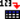

Table of Contents
All toolbars can be moved and docked to a more convenient location (left, right or bottom sides of the application window) or on the desktop (outside the main window) by drag-and-drop, using their left side handle. The toolbars are automatically enabled/disabled depending on the currently active window: for example if the current window is a table, the Table toolbar will be enabled and all the other toolbars will be automatically disabled.
The same approach is used for showing/hiding the toolbars: if there are no more visible tables in the workspace, the Table toolbar will be automatically hidden and will be shown again when the users adds a new table into the project. A toolbar can be manually shown/hidden by the user, at any time, by right-clicking on the main window menu area and checking/unchecking the corresponding box in the pop-up menu.
The File Toolbar allows to access commands mainly from the File menu. Refer to this section for a more complete description of these commands.
Table 6.1. File toolbar commands.
| Icon | Command | Key | Description |
|---|---|---|---|
| New→New Project command | CTRL+N | Create a new project. | |
| New command | Access to the New sub-menu. | ||
| New→New Table command | CTRL+T | Create a new table. | |
| New→New Matrix command | CTRL+M | Create a new matrix. | |
| New→New Note/Script command | CTRL+ALT+N | Create a new note window, this object can be used as a calculator or to use scripts. | |
| New→New Graph command | CTRL+G | Create a new empty 2D plot. | |
| New→New Function Plot command | CTRL+F | Creates a new plot based on a function Y=f(X). | |
| New→New 3D Surface Plot command | CTRL+ALT+Z | Creates a new 3D plot based on a function Z=f(X,Y). | |
| Open command | CTRL+O | Opens an existing SciDAVis project file. | |
| Open Template command | Opens an existing template SciDAVis project file. | ||
| Save Project command | CTRL+S | Saves the current project. | |
| Save as Template command | Saves the current project as a template. | ||
|  | Import Ascii command | Imports an ASCII file into one or multiple tables. | |
| Print command | CTRL+P | Print the active window. | |
| Export to PDF command | Export to PDF. | ||
| Project Explorer command | CTRL+E | Show or hide the project explorer. | |
| Results Log command | Show or hide the results window. |